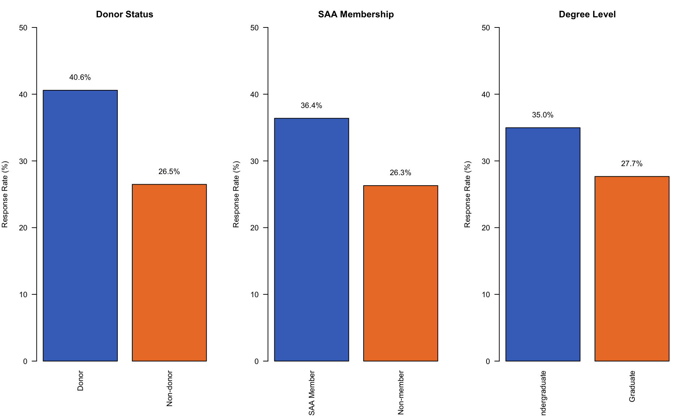
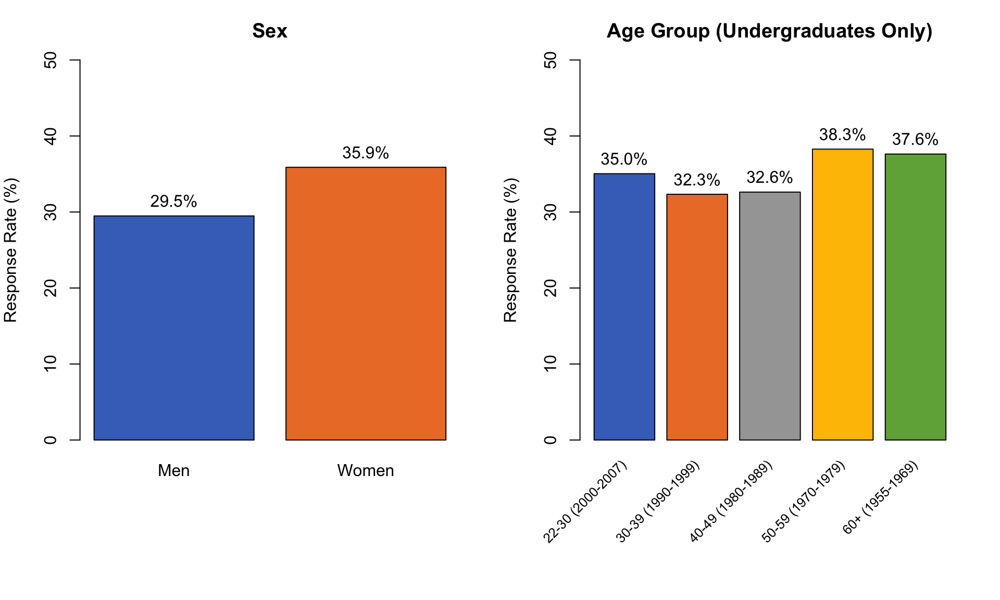
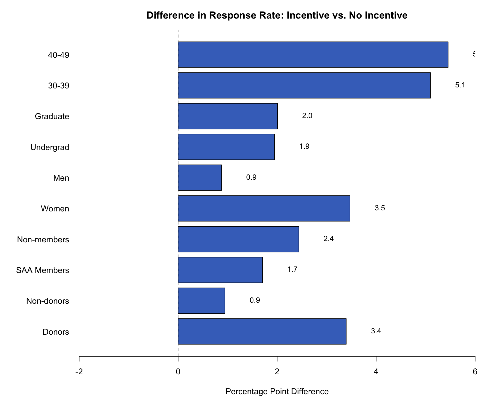
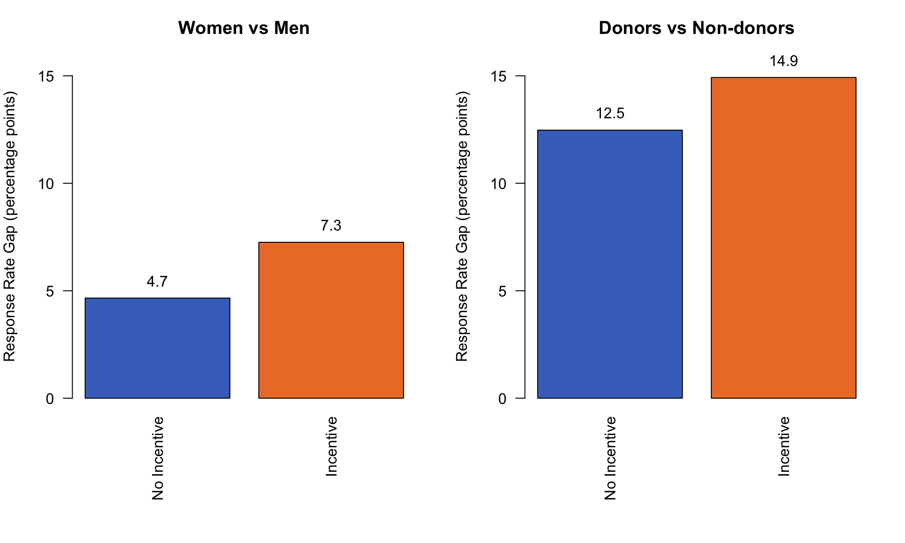

Code
# Load required packages
library(tidyverse)
library(broom)
library(knitr)
library(kableExtra)
# Set options
options(scipen = 999) # Avoid scientific notation# Load required packages
library(tidyverse)
library(broom)
library(knitr)
library(kableExtra)
# Set options
options(scipen = 999) # Avoid scientific notation# Load the survey data
data <- read_csv("incentive sample with demos and response.xlsx - total sample.csv")Rows: 7333 Columns: 8
── Column specification ────────────────────────────────────────────────────────
Delimiter: ","
chr (1): respondent
dbl (7): sex, year, yrgrp, degree, saa, donor, sample
ℹ Use `spec()` to retrieve the full column specification for this data.
ℹ Specify the column types or set `show_col_types = FALSE` to quiet this message.# Display data structure
glimpse(data)Rows: 7,333
Columns: 8
$ sex <dbl> 2, 1, 2, 1, 2, 2, 1, 2, 1, 2, 1, 1, 1, 1, 2, 2, 1, 2, 1, 1,…
$ year <dbl> 1983, 1974, 1988, 1975, 1974, 1994, 1997, 1991, 1985, 1995,…
$ yrgrp <dbl> 3, 4, 3, 4, 4, 2, 2, 2, 3, 2, 1, 3, 1, 5, 5, 5, 2, 5, 2, 1,…
$ degree <dbl> 2, 1, 1, 1, 1, 2, 2, 2, 2, 2, 1, 1, 2, 1, 1, 1, 2, 1, 1, 2,…
$ saa <dbl> 1, 1, 1, 2, 1, 2, 2, 2, 1, 1, 1, 1, 2, 1, 1, 1, 2, 1, 1, 2,…
$ donor <dbl> 2, 2, 2, 2, 1, 2, 2, 2, 1, 1, 2, 2, 2, 1, 1, 1, 2, 1, 2, 1,…
$ sample <dbl> 1, 2, 3, 1, 2, 3, 1, 2, 3, 1, 2, 3, 1, 2, 3, 1, 2, 3, 1, 2,…
$ respondent <chr> NA, NA, NA, "Y", NA, NA, NA, NA, NA, NA, NA, "Y", NA, NA, "…# Recode variables according to codebook
data <- data %>%
mutate(
# Sex
sex_label = factor(sex, levels = 1:2, labels = c("Men", "Women")),
# Year group (age proxy for undergrads only)
yrgrp_label = factor(yrgrp,
levels = 1:5,
labels = c("22-30 (2000-2007)",
"30-39 (1990-1999)",
"40-49 (1980-1989)",
"50-59 (1970-1979)",
"60+ (1955-1969)")),
# Degree type
degree_label = factor(degree,
levels = 1:2,
labels = c("Undergraduate", "Graduate")),
# SAA membership
saa_label = factor(saa,
levels = 1:2,
labels = c("SAA Member", "Non-member")),
# Donor status
donor_label = factor(donor,
levels = 1:2,
labels = c("Donor", "Non-donor")),
# Sample/experimental condition
sample_label = factor(sample,
levels = 1:3,
labels = c("No Incentive",
"5 x $100",
"1 x $500")),
# Create binary incentive variable (any incentive vs. none)
incentive = ifelse(sample == 1, 0, 1),
incentive_label = factor(incentive,
levels = 0:1,
labels = c("No Incentive", "Incentive")),
# Response variable (Y = responded, NA = non-response)
responded = ifelse(is.na(respondent), 0, 1)
)
# Check recoding
table(data$sex, data$sex_label)
Men Women
1 4613 0
2 0 2720table(data$sample, data$sample_label)
No Incentive 5 x $100 1 x $500
1 2430 0 0
2 0 2449 0
3 0 0 2454table(data$respondent, data$responded, useNA = "always")
0 1 <NA>
Y 0 2336 0
<NA> 4997 0 0# Calculate overall response rate (reported as 31.9% in paper)
overall_rr <- data %>%
summarise(
n = n(),
respondents = sum(responded),
response_rate = mean(responded) * 100
)
cat("Overall Response Rate:", sprintf("%.1f%%", overall_rr$response_rate), "\n")Overall Response Rate: 31.9% cat("Total Sample:", overall_rr$n, "\n")Total Sample: 7333 cat("Total Respondents:", overall_rr$respondents, "\n")Total Respondents: 2336 # Calculate response rates for Figure 1 (donor, SAA, degree)
fig1_donor <- data %>%
group_by(donor_label) %>%
summarise(response_rate = mean(responded) * 100, .groups = "drop")
fig1_saa <- data %>%
group_by(saa_label) %>%
summarise(response_rate = mean(responded) * 100, .groups = "drop")
fig1_degree <- data %>%
group_by(degree_label) %>%
summarise(response_rate = mean(responded) * 100, .groups = "drop")
# Create panel plot similar to original
par(mfrow = c(1, 3), mar = c(6, 4, 3, 2))
# Donor panel
barplot(fig1_donor$response_rate,
names.arg = fig1_donor$donor_label,
ylim = c(0, 50),
ylab = "Response Rate (%)",
main = "Donor Status",
col = c("#4472C4", "#ED7D31"),
las = 2)
text(x = c(0.7, 1.9), y = fig1_donor$response_rate + 2,
labels = sprintf("%.1f%%", fig1_donor$response_rate))
# SAA panel
barplot(fig1_saa$response_rate,
names.arg = fig1_saa$saa_label,
ylim = c(0, 50),
ylab = "Response Rate (%)",
main = "SAA Membership",
col = c("#4472C4", "#ED7D31"),
las = 2)
text(x = c(0.7, 1.9), y = fig1_saa$response_rate + 2,
labels = sprintf("%.1f%%", fig1_saa$response_rate))
# Degree panel
barplot(fig1_degree$response_rate,
names.arg = fig1_degree$degree_label,
ylim = c(0, 50),
ylab = "Response Rate (%)",
main = "Degree Level",
col = c("#4472C4", "#ED7D31"),
las = 2)
text(x = c(0.7, 1.9), y = fig1_degree$response_rate + 2,
labels = sprintf("%.1f%%", fig1_degree$response_rate))
par(mfrow = c(1, 1))
# Statistical tests
cat("\n=== Statistical Tests for Figure 1 ===\n\n")
=== Statistical Tests for Figure 1 ===cat("Donors vs Non-donors:\n")Donors vs Non-donors:print(chisq.test(table(data$donor_label, data$responded)))
Pearson's Chi-squared test with Yates' continuity correction
data: table(data$donor_label, data$responded)
X-squared = 157.86, df = 1, p-value < 0.00000000000000022cat("\nSAA vs Non-SAA:\n")
SAA vs Non-SAA:print(chisq.test(table(data$saa_label, data$responded)))
Pearson's Chi-squared test with Yates' continuity correction
data: table(data$saa_label, data$responded)
X-squared = 84.586, df = 1, p-value < 0.00000000000000022cat("\nUndergrad vs Graduate:\n")
Undergrad vs Graduate:print(chisq.test(table(data$degree_label, data$responded)))
Pearson's Chi-squared test with Yates' continuity correction
data: table(data$degree_label, data$responded)
X-squared = 43.792, df = 1, p-value = 0.00000000003652# Calculate response rates for Figure 2
fig2_sex <- data %>%
group_by(sex_label) %>%
summarise(response_rate = mean(responded) * 100, .groups = "drop")
fig2_age <- data %>%
filter(degree == 1) %>% # Only undergrads for age analysis
group_by(yrgrp_label) %>%
summarise(response_rate = mean(responded) * 100, .groups = "drop")
# Create panel plot
par(mfrow = c(1, 2), mar = c(8, 4, 3, 2))
# Sex panel
barplot(fig2_sex$response_rate,
names.arg = fig2_sex$sex_label,
ylim = c(0, 50),
ylab = "Response Rate (%)",
main = "Sex",
col = c("#4472C4", "#ED7D31"))
text(x = c(0.7, 1.9), y = fig2_sex$response_rate + 2,
labels = sprintf("%.1f%%", fig2_sex$response_rate))
# Age panel
bp <- barplot(fig2_age$response_rate,
ylim = c(0, 50),
ylab = "Response Rate (%)",
main = "Age Group (Undergraduates Only)",
col = c("#4472C4", "#ED7D31", "#A5A5A5", "#FFC000", "#70AD47"),
xaxt = "n")
text(x = bp, y = fig2_age$response_rate + 2,
labels = sprintf("%.1f%%", fig2_age$response_rate))
text(x = bp, y = -3, labels = fig2_age$yrgrp_label,
srt = 45, adj = 1, xpd = TRUE, cex = 0.8)
par(mfrow = c(1, 1))
# Statistical tests
cat("\n=== Statistical Tests for Figure 2 ===\n\n")
=== Statistical Tests for Figure 2 ===cat("Women vs Men:\n")Women vs Men:print(chisq.test(table(data$sex_label, data$responded)))
Pearson's Chi-squared test with Yates' continuity correction
data: table(data$sex_label, data$responded)
X-squared = 31.996, df = 1, p-value = 0.00000001545cat("\nAge differences (undergrads only):\n")
Age differences (undergrads only):print(chisq.test(table(data$yrgrp_label[data$degree == 1],
data$responded[data$degree == 1])))
Pearson's Chi-squared test
data: table(data$yrgrp_label[data$degree == 1], data$responded[data$degree == 1])
X-squared = 11.382, df = 4, p-value = 0.02259# Calculate response rate differences for each demographic group
# Format: For each group, calculate RR with incentive minus RR without incentive
# Create function to calculate difference
calc_diff <- function(df, groupvar) {
df %>%
group_by(group = {{groupvar}}, incentive_label) %>%
summarise(rr = mean(responded) * 100, .groups = "drop") %>%
pivot_wider(names_from = incentive_label, values_from = rr) %>%
mutate(difference = Incentive - `No Incentive`)
}
# Calculate for each demographic
diffs <- list(
donors = calc_diff(filter(data, donor == 1), donor_label) %>%
mutate(label = "Donors"),
nondonors = calc_diff(filter(data, donor == 2), donor_label) %>%
mutate(label = "Non-donors"),
saa = calc_diff(filter(data, saa == 1), saa_label) %>%
mutate(label = "SAA Members"),
nonsaa = calc_diff(filter(data, saa == 2), saa_label) %>%
mutate(label = "Non-members"),
women = calc_diff(filter(data, sex == 2), sex_label) %>%
mutate(label = "Women"),
men = calc_diff(filter(data, sex == 1), sex_label) %>%
mutate(label = "Men"),
undergrad = calc_diff(filter(data, degree == 1), degree_label) %>%
mutate(label = "Undergrad"),
grad = calc_diff(filter(data, degree == 2), degree_label) %>%
mutate(label = "Graduate"),
age30s = calc_diff(filter(data, degree == 1, yrgrp == 2), yrgrp_label) %>%
mutate(label = "30-39"),
age40s = calc_diff(filter(data, degree == 1, yrgrp == 3), yrgrp_label) %>%
mutate(label = "40-49")
)
# Combine and prepare for plotting
plot_data <- bind_rows(diffs) %>%
select(label, difference)
# Create horizontal bar plot similar to original
par(mar = c(4, 8, 3, 2))
bp <- barplot(plot_data$difference,
horiz = TRUE,
names.arg = plot_data$label,
las = 1,
xlim = c(-2, 6),
xlab = "Percentage Point Difference",
main = "Difference in Response Rate: Incentive vs. No Incentive",
col = "#4472C4")
abline(v = 0, lty = 2, col = "gray50")
text(x = plot_data$difference + 0.4, y = bp,
labels = sprintf("%.1f", plot_data$difference),
pos = 4, cex = 0.9)
# Statistical significance tests
cat("\n=== Fisher's Exact Tests (one-tailed) ===\n\n")
=== Fisher's Exact Tests (one-tailed) ===cat("Donors:\n")Donors:print(fisher.test(table(data$incentive[data$donor == 1],
data$responded[data$donor == 1]),
alternative = "greater"))
Fisher's Exact Test for Count Data
data: table(data$incentive[data$donor == 1], data$responded[data$donor == 1])
p-value = 0.04624
alternative hypothesis: true odds ratio is greater than 1
95 percent confidence interval:
1.003057 Inf
sample estimates:
odds ratio
1.151946 cat("\nWomen:\n")
Women:print(fisher.test(table(data$incentive[data$sex == 2],
data$responded[data$sex == 2]),
alternative = "greater"))
Fisher's Exact Test for Count Data
data: table(data$incentive[data$sex == 2], data$responded[data$sex == 2])
p-value = 0.04141
alternative hypothesis: true odds ratio is greater than 1
95 percent confidence interval:
1.007669 Inf
sample estimates:
odds ratio
1.164172 cat("\nAge 30-39 (undergrads):\n")
Age 30-39 (undergrads):print(fisher.test(table(data$incentive[data$degree == 1 & data$yrgrp == 2],
data$responded[data$degree == 1 & data$yrgrp == 2]),
alternative = "greater"))
Fisher's Exact Test for Count Data
data: table(data$incentive[data$degree == 1 & data$yrgrp == 2], data$responded[data$degree == 1 & data$yrgrp == 2])
p-value = 0.05723
alternative hypothesis: true odds ratio is greater than 1
95 percent confidence interval:
0.9906069 Inf
sample estimates:
odds ratio
1.266889 cat("\nAge 40-49 (undergrads):\n")
Age 40-49 (undergrads):print(fisher.test(table(data$incentive[data$degree == 1 & data$yrgrp == 3],
data$responded[data$degree == 1 & data$yrgrp == 3]),
alternative = "greater"))
Fisher's Exact Test for Count Data
data: table(data$incentive[data$degree == 1 & data$yrgrp == 3], data$responded[data$degree == 1 & data$yrgrp == 3])
p-value = 0.06615
alternative hypothesis: true odds ratio is greater than 1
95 percent confidence interval:
0.9782124 Inf
sample estimates:
odds ratio
1.286876 # Calculate gaps between groups with and without incentives
# Women vs Men gap
sex_rates <- data %>%
group_by(sex_label, incentive_label) %>%
summarise(rr = mean(responded) * 100, .groups = "drop") %>%
pivot_wider(names_from = sex_label, values_from = rr) %>%
mutate(gap = Women - Men)
# Donor vs Non-donor gap
donor_rates <- data %>%
group_by(donor_label, incentive_label) %>%
summarise(rr = mean(responded) * 100, .groups = "drop") %>%
pivot_wider(names_from = donor_label, values_from = rr) %>%
mutate(gap = Donor - `Non-donor`)
# Combine for plotting
gap_data <- data.frame(
condition = c("No Incentive", "Incentive", "No Incentive", "Incentive"),
gap = c(sex_rates$gap, donor_rates$gap),
comparison = c("Women vs Men", "Women vs Men",
"Donors vs Non-donors", "Donors vs Non-donors")
)
# Create grouped bar plot
par(mfrow = c(1, 2), mar = c(8, 4, 3, 2))
# Women vs Men panel
women_men_data <- gap_data %>% filter(comparison == "Women vs Men")
bp1 <- barplot(women_men_data$gap,
names.arg = women_men_data$condition,
ylim = c(0, 16),
ylab = "Response Rate Gap (percentage points)",
main = "Women vs Men",
col = c("#4472C4", "#ED7D31"),
las = 2)
text(x = bp1, y = women_men_data$gap + 0.8,
labels = sprintf("%.1f", women_men_data$gap))
# Donors vs Non-donors panel
donor_nondonor_data <- gap_data %>% filter(comparison == "Donors vs Non-donors")
bp2 <- barplot(donor_nondonor_data$gap,
names.arg = donor_nondonor_data$condition,
ylim = c(0, 16),
ylab = "Response Rate Gap (percentage points)",
main = "Donors vs Non-donors",
col = c("#4472C4", "#ED7D31"),
las = 2)
text(x = bp2, y = donor_nondonor_data$gap + 0.8,
labels = sprintf("%.1f", donor_nondonor_data$gap))
par(mfrow = c(1, 1))
# Print gap increases
cat("\n=== Gap Increases ===\n\n")
=== Gap Increases ===cat("Women vs Men gap:\n")Women vs Men gap:cat(" Without incentive:", sprintf("%.1f", sex_rates$gap[1]), "points\n") Without incentive: 4.7 pointscat(" With incentive:", sprintf("%.1f", sex_rates$gap[2]), "points\n") With incentive: 7.3 pointscat(" Increase:", sprintf("%.1f%%",
(sex_rates$gap[2] - sex_rates$gap[1]) / sex_rates$gap[1] * 100), "\n\n") Increase: 55.7% cat("Donors vs Non-donors gap:\n")Donors vs Non-donors gap:cat(" Without incentive:", sprintf("%.1f", donor_rates$gap[1]), "points\n") Without incentive: 12.5 pointscat(" With incentive:", sprintf("%.1f", donor_rates$gap[2]), "points\n") With incentive: 14.9 pointscat(" Increase:", sprintf("%.1f%%",
(donor_rates$gap[2] - donor_rates$gap[1]) / donor_rates$gap[1] * 100), "\n") Increase: 19.6% # Prepare data for logistic regression
# Reference groups: No incentive, non-donor, non-SAA, graduate, men, age 22-30
reg_data <- data %>%
mutate(
# Create dummy variables (1 = characteristic present, 0 = reference)
offered_incentive = incentive,
is_donor = ifelse(donor == 1, 1, 0),
is_saa_member = ifelse(saa == 1, 1, 0),
is_undergrad = ifelse(degree == 1, 1, 0),
is_women = ifelse(sex == 2, 1, 0),
# Age dummies (reference = age 22-30, yrgrp = 1)
age_60plus = ifelse(yrgrp == 5, 1, 0),
age_50_59 = ifelse(yrgrp == 4, 1, 0),
age_40_49 = ifelse(yrgrp == 3, 1, 0),
age_30_39 = ifelse(yrgrp == 2, 1, 0)
)
# Run logistic regression
model <- glm(responded ~ offered_incentive + is_donor + is_saa_member +
is_undergrad + is_women + age_60plus + age_50_59 +
age_40_49 + age_30_39,
data = reg_data,
family = binomial(link = "logit"))
# Extract and format results
model_results <- tidy(model) %>%
mutate(
predictor = case_when(
term == "offered_incentive" ~ "Offered an incentive",
term == "is_donor" ~ "Donor",
term == "is_saa_member" ~ "Alumni Association member",
term == "is_undergrad" ~ "Undergraduate degree",
term == "is_women" ~ "Women",
term == "age_60plus" ~ "Age 60 and older (undergrad 1955-1969)",
term == "age_50_59" ~ "Age 50-59 (undergrad 1970-1979)",
term == "age_40_49" ~ "Age 40-49 (undergrad 1980-1989)",
term == "age_30_39" ~ "Age 30-39 (undergrad 1990-1999)",
TRUE ~ term
)
) %>%
filter(term != "(Intercept)") %>%
select(
Predictor = predictor,
Coefficient = estimate,
`Standard Error` = std.error,
Probability = p.value
) %>%
mutate(
Coefficient = round(Coefficient, 2),
`Standard Error` = round(`Standard Error`, 2),
Probability = ifelse(Probability < .0001, "< .0001",
sprintf("%.3f", Probability))
)
# Display table
kable(model_results,
caption = "Table 1: Effects of Incentives and Demographic Characteristics on Survey Participation",
align = c("l", "r", "r", "r")) %>%
kable_styling(bootstrap_options = c("striped", "hover", "condensed"),
full_width = FALSE)| Predictor | Coefficient | Standard Error | Probability |
|---|---|---|---|
| Offered an incentive | 0.10 | 0.05 | 0.067 |
| Donor | 0.54 | 0.05 | < .0001 |
| Alumni Association member | 0.31 | 0.06 | < .0001 |
| Undergraduate degree | 0.13 | 0.06 | 0.018 |
| Women | 0.27 | 0.05 | < .0001 |
| Age 60 and older (undergrad 1955-1969) | 0.03 | 0.09 | 0.739 |
| Age 50-59 (undergrad 1970-1979) | -0.01 | 0.08 | 0.903 |
| Age 40-49 (undergrad 1980-1989) | -0.13 | 0.08 | 0.117 |
| Age 30-39 (undergrad 1990-1999) | -0.23 | 0.08 | 0.002 |
cat("\nNote: Omitted (reference) groups are: Non-donors, Alumni Association non-members,\n")
Note: Omitted (reference) groups are: Non-donors, Alumni Association non-members,cat("graduate alumni, men, people aged 22-30 (undergraduate 2000-2007),\n")graduate alumni, men, people aged 22-30 (undergraduate 2000-2007),cat("and not offered an incentive.\n")and not offered an incentive.# Create detailed cross-tabulation matching paper's Table 2
# Men/Women × Donor/Non-donor × SAA/Non-SAA × Incentive/No incentive
# First, calculate the statistics by all combinations
table2_summary <- data %>%
group_by(sex_label, donor_label, saa_label, incentive_label) %>%
summarise(
n = n(),
respondents = sum(responded),
response_rate = mean(responded) * 100,
.groups = "drop"
)
# Pivot to get No Incentive and Incentive as separate columns
table2_wide <- table2_summary %>%
pivot_wider(
id_cols = c(sex_label, donor_label, saa_label),
names_from = incentive_label,
values_from = c(response_rate, n, respondents)
)
# Calculate difference and total N
table2_final <- table2_wide %>%
mutate(
difference = `response_rate_Incentive` - `response_rate_No Incentive`,
N_total = `n_No Incentive` + n_Incentive
) %>%
arrange(sex_label, donor_label, saa_label)
# Format for display
table2_display <- table2_final %>%
mutate(
`No Incentive` = sprintf("%.1f%%", `response_rate_No Incentive`),
Incentive = sprintf("%.1f%%", response_rate_Incentive),
Difference = sprintf("%.1f%%", difference)
) %>%
select(
Sex = sex_label,
`Donor Status` = donor_label,
`SAA Status` = saa_label,
`No Incentive`,
Incentive,
Difference,
N = N_total
)
# Display table
kable(table2_display,
caption = "Table 2: Response Rates by Selected Respondent Characteristics as a Function of Incentives",
align = c("l", "l", "l", "r", "r", "r", "r")) %>%
kable_styling(bootstrap_options = c("striped", "hover", "condensed"),
full_width = FALSE) %>%
pack_rows("Men", 1, 4) %>%
pack_rows("Women", 5, 8)| Sex | Donor Status | SAA Status | No Incentive | Incentive | Difference | N |
|---|---|---|---|---|---|---|
| Men | ||||||
| Men | Donor | SAA Member | 37.2% | 39.1% | 1.9% | 1175 |
| Men | Donor | Non-member | 31.4% | 34.6% | 3.2% | 536 |
| Men | Non-donor | SAA Member | 29.6% | 28.0% | -1.7% | 1342 |
| Men | Non-donor | Non-member | 20.9% | 22.7% | 1.9% | 1560 |
| Women | ||||||
| Women | Donor | SAA Member | 44.9% | 53.0% | 8.1% | 745 |
| Women | Donor | Non-member | 38.2% | 37.7% | -0.5% | 338 |
| Women | Non-donor | SAA Member | 32.7% | 34.0% | 1.3% | 778 |
| Women | Non-donor | Non-member | 22.3% | 26.0% | 3.7% | 859 |
# Statistical test for key finding
cat("\n=== Test for Women/Donor/SAA Members (key finding) ===\n")
=== Test for Women/Donor/SAA Members (key finding) ===women_donor_saa <- data %>%
filter(sex == 2, donor == 1, saa == 1)
test_result <- fisher.test(
table(women_donor_saa$incentive, women_donor_saa$responded),
alternative = "greater"
)
print(test_result)
Fisher's Exact Test for Count Data
data: table(women_donor_saa$incentive, women_donor_saa$responded)
p-value = 0.0221
alternative hypothesis: true odds ratio is greater than 1
95 percent confidence interval:
1.058386 Inf
sample estimates:
odds ratio
1.381621 cat("\nResponse rates for Women/Donor/SAA:\n")
Response rates for Women/Donor/SAA:cat(" No incentive:",
sprintf("%.1f%%", mean(women_donor_saa$responded[women_donor_saa$incentive == 0]) * 100), "\n") No incentive: 44.9% cat(" Incentive:",
sprintf("%.1f%%", mean(women_donor_saa$responded[women_donor_saa$incentive == 1]) * 100), "\n") Incentive: 53.0% cat(" Difference:",
sprintf("%.1f percentage points\n",
mean(women_donor_saa$responded[women_donor_saa$incentive == 1]) * 100 -
mean(women_donor_saa$responded[women_donor_saa$incentive == 0]) * 100)) Difference: 8.1 percentage points# Function to calculate response rates for a given sample
calc_sample_stats <- function(df, total_df) {
tibble(
pct_sample = nrow(df) / nrow(total_df) * 100,
response_rate = mean(df$responded) * 100
)
}
# Create comprehensive appendix table
create_appendix <- function(data) {
samples <- list(
all = data,
s1 = data %>% filter(sample == 1),
s2 = data %>% filter(sample == 2),
s3 = data %>% filter(sample == 3)
)
results <- tibble()
for (s_name in names(samples)) {
df <- samples[[s_name]]
# Overall
overall <- tibble(
Group = "All",
pct = 100,
rr = mean(df$responded) * 100
)
# By sex
by_sex <- df %>%
group_by(Group = as.character(sex_label)) %>%
summarise(
pct = n() / nrow(df) * 100,
rr = mean(responded) * 100,
.groups = "drop"
)
# By SAA
by_saa <- df %>%
group_by(Group = as.character(saa_label)) %>%
summarise(
pct = n() / nrow(df) * 100,
rr = mean(responded) * 100,
.groups = "drop"
)
# By donor
by_donor <- df %>%
group_by(Group = as.character(donor_label)) %>%
summarise(
pct = n() / nrow(df) * 100,
rr = mean(responded) * 100,
.groups = "drop"
)
# By degree
by_degree <- df %>%
group_by(Group = as.character(degree_label)) %>%
summarise(
pct = n() / nrow(df) * 100,
rr = mean(responded) * 100,
.groups = "drop"
)
# By age (undergrads only)
by_age <- df %>%
filter(degree == 1) %>%
group_by(Group = as.character(yrgrp_label)) %>%
summarise(
pct = n() / sum(df$degree == 1) * 100,
rr = mean(responded) * 100,
.groups = "drop"
)
# Combine all groups
sample_results <- bind_rows(
overall, by_sex, by_saa, by_donor, by_degree, by_age
) %>%
mutate(sample = s_name)
results <- bind_rows(results, sample_results)
}
# Pivot to wide format
results %>%
pivot_wider(
names_from = sample,
values_from = c(pct, rr)
) %>%
select(Group,
pct_all, rr_all,
pct_s1, rr_s1,
pct_s2, rr_s2,
pct_s3, rr_s3)
}
appendix_table <- create_appendix(data)
# Format for display
appendix_display <- appendix_table %>%
mutate(
across(starts_with("pct"), ~sprintf("%.1f%%", .)),
across(starts_with("rr"), ~sprintf("%.1f%%", .))
)
kable(appendix_display,
col.names = c("Group",
"% of Sample", "Response Rate",
"% of Sample", "Response Rate",
"% of Sample", "Response Rate",
"% of Sample", "Response Rate"),
caption = "Appendix: Response Rates",
align = "lrrrrrrrr") %>%
kable_styling(bootstrap_options = c("striped", "hover", "condensed"),
full_width = TRUE,
font_size = 10) %>%
add_header_above(c(" " = 1,
"All Three Samples" = 2,
"Sample 1: No Incentive" = 2,
"Sample 2: 5 x $100" = 2,
"Sample 3: 1 x $500" = 2))| Group | % of Sample | Response Rate | % of Sample | Response Rate | % of Sample | Response Rate | % of Sample | Response Rate |
|---|---|---|---|---|---|---|---|---|
| All | 100.0% | 31.9% | 100.0% | 30.6% | 100.0% | 32.6% | 100.0% | 32.4% |
| Men | 62.9% | 29.5% | 63.1% | 28.9% | 61.9% | 29.9% | 63.7% | 29.6% |
| Women | 37.1% | 35.9% | 36.9% | 33.6% | 38.1% | 36.9% | 36.3% | 37.1% |
| Non-member | 44.9% | 26.3% | 43.7% | 24.6% | 45.2% | 26.5% | 45.8% | 27.7% |
| SAA Member | 55.1% | 36.4% | 56.3% | 35.3% | 54.8% | 37.6% | 54.2% | 36.3% |
| Donor | 38.1% | 40.6% | 38.2% | 38.3% | 37.4% | 42.6% | 38.6% | 40.8% |
| Non-donor | 61.9% | 26.5% | 61.8% | 25.8% | 62.6% | 26.6% | 61.4% | 27.0% |
| Graduate | 42.7% | 27.7% | 41.6% | 26.3% | 44.2% | 29.1% | 42.3% | 27.5% |
| Undergraduate | 57.3% | 35.0% | 58.4% | 33.7% | 55.8% | 35.3% | 57.7% | 35.9% |
| 22-30 (2000-2007) | 18.1% | 35.0% | 18.7% | 34.0% | 17.9% | 33.1% | 17.8% | 38.1% |
| 30-39 (1990-1999) | 24.6% | 32.3% | 23.9% | 28.9% | 24.1% | 32.8% | 25.8% | 35.1% |
| 40-49 (1980-1989) | 20.0% | 32.6% | 19.2% | 28.9% | 20.1% | 33.8% | 20.6% | 34.9% |
| 50-59 (1970-1979) | 18.5% | 38.3% | 18.7% | 40.4% | 19.2% | 41.1% | 17.5% | 33.1% |
| 60+ (1955-1969) | 18.8% | 37.6% | 19.5% | 37.5% | 18.7% | 36.5% | 18.3% | 38.8% |
# Test whether framing matters: 5 x $100 vs 1 x $500
incentive_comparison <- data %>%
filter(sample %in% c(2, 3)) %>%
group_by(sample_label) %>%
summarise(
n = n(),
respondents = sum(responded),
response_rate = mean(responded) * 100,
.groups = "drop"
)
kable(incentive_comparison,
caption = "Comparison of Two Incentive Framings",
col.names = c("Sample", "N", "Respondents", "Response Rate (%)"),
align = "lrrr") %>%
kable_styling(bootstrap_options = c("striped", "hover", "condensed"),
full_width = FALSE)| Sample | N | Respondents | Response Rate (%) |
|---|---|---|---|
| 5 x $100 | 2449 | 798 | 32.58473 |
| 1 x $500 | 2454 | 794 | 32.35534 |
# Chi-square test for difference
cat("\n=== Test for difference between two incentive framings ===\n")
=== Test for difference between two incentive framings ===test_data <- data %>% filter(sample %in% c(2, 3))
chisq.test(table(test_data$sample, test_data$responded))
Pearson's Chi-squared test with Yates' continuity correction
data: table(test_data$sample, test_data$responded)
X-squared = 0.019884, df = 1, p-value = 0.8879# Test within demographic subgroups
cat("\n=== By demographic subgroups ===\n\n")
=== By demographic subgroups ===cat("Donors:\n")Donors:chisq.test(table(test_data$sample[test_data$donor == 1],
test_data$responded[test_data$donor == 1]))
Pearson's Chi-squared test with Yates' continuity correction
data: table(test_data$sample[test_data$donor == 1], test_data$responded[test_data$donor == 1])
X-squared = 0.55992, df = 1, p-value = 0.4543cat("\nWomen:\n")
Women:chisq.test(table(test_data$sample[test_data$sex == 2],
test_data$responded[test_data$sex == 2]))
Pearson's Chi-squared test with Yates' continuity correction
data: table(test_data$sample[test_data$sex == 2], test_data$responded[test_data$sex == 2])
X-squared = 0.003283, df = 1, p-value = 0.9543cat("\nSAA Members:\n")
SAA Members:chisq.test(table(test_data$sample[test_data$saa == 1],
test_data$responded[test_data$saa == 1]))
Pearson's Chi-squared test with Yates' continuity correction
data: table(test_data$sample[test_data$saa == 1], test_data$responded[test_data$saa == 1])
X-squared = 0.42112, df = 1, p-value = 0.5164cat("\nUndergraduates:\n")
Undergraduates:chisq.test(table(test_data$sample[test_data$degree == 1],
test_data$responded[test_data$degree == 1]))
Pearson's Chi-squared test with Yates' continuity correction
data: table(test_data$sample[test_data$degree == 1], test_data$responded[test_data$degree == 1])
X-squared = 0.08085, df = 1, p-value = 0.7761# Calculate cost per additional complete
cat("=== COST-EFFECTIVENESS OF INCENTIVES ===\n\n")=== COST-EFFECTIVENESS OF INCENTIVES ===# Response rates
rr_no_incentive <- mean(data$responded[data$incentive == 0])
rr_incentive <- mean(data$responded[data$incentive == 1])
# Sample sizes
n_incentive_samples <- sum(data$incentive == 1)
# Expected vs actual respondents
n_expected <- n_incentive_samples * rr_no_incentive
n_actual <- sum(data$responded[data$incentive == 1])
extra_respondents <- n_actual - n_expected
# Cost calculation
total_cost <- 1000 # Total prize money
cost_per_extra <- total_cost / extra_respondents
cat("Response rate without incentive:", sprintf("%.1f%%", rr_no_incentive * 100), "\n")Response rate without incentive: 30.6% cat("Response rate with incentive:", sprintf("%.1f%%", rr_incentive * 100), "\n")Response rate with incentive: 32.5% cat("Increase:", sprintf("%.1f percentage points\n\n",
(rr_incentive - rr_no_incentive) * 100))Increase: 1.9 percentage pointscat("N in incentive samples:", n_incentive_samples, "\n")N in incentive samples: 4903 cat("Expected respondents (at no-incentive rate):", round(n_expected, 1), "\n")Expected respondents (at no-incentive rate): 1501.2 cat("Actual respondents:", n_actual, "\n")Actual respondents: 1592 cat("Extra respondents due to incentive:", round(extra_respondents, 1), "\n\n")Extra respondents due to incentive: 90.8 cat("Total cost of incentives: $", total_cost, "\n", sep = "")Total cost of incentives: $1000cat("Cost per extra respondent: $", sprintf("%.2f", cost_per_extra), "\n", sep = "")Cost per extra respondent: $11.01# Verify random assignment worked properly
# Check if demographic distributions are similar across three samples
cat("=== SAMPLE BALANCE CHECK ===\n\n")=== SAMPLE BALANCE CHECK ===cat("Testing whether demographic distributions differ across samples\n")Testing whether demographic distributions differ across samplescat("(Should be non-significant if randomization worked)\n\n")(Should be non-significant if randomization worked)# Sex distribution
cat("Sex distribution:\n")Sex distribution:print(table(data$sample_label, data$sex_label))
Men Women
No Incentive 1533 897
5 x $100 1517 932
1 x $500 1563 891print(chisq.test(table(data$sample, data$sex)))
Pearson's Chi-squared test
data: table(data$sample, data$sex)
X-squared = 1.6555, df = 2, p-value = 0.437# Donor distribution
cat("\nDonor distribution:\n")
Donor distribution:print(table(data$sample_label, data$donor_label))
Donor Non-donor
No Incentive 929 1501
5 x $100 917 1532
1 x $500 948 1506print(chisq.test(table(data$sample, data$donor)))
Pearson's Chi-squared test
data: table(data$sample, data$donor)
X-squared = 0.75776, df = 2, p-value = 0.6846# SAA distribution
cat("\nSAA distribution:\n")
SAA distribution:print(table(data$sample_label, data$saa_label))
SAA Member Non-member
No Incentive 1367 1063
5 x $100 1343 1106
1 x $500 1330 1124print(chisq.test(table(data$sample, data$saa)))
Pearson's Chi-squared test
data: table(data$sample, data$saa)
X-squared = 2.1864, df = 2, p-value = 0.3351# Degree distribution
cat("\nDegree distribution:\n")
Degree distribution:print(table(data$sample_label, data$degree_label))
Undergraduate Graduate
No Incentive 1419 1011
5 x $100 1367 1082
1 x $500 1417 1037print(chisq.test(table(data$sample, data$degree)))
Pearson's Chi-squared test
data: table(data$sample, data$degree)
X-squared = 3.5832, df = 2, p-value = 0.1667# Calculate how much the sample deviates from population on key characteristics
# Higher response rates should ideally not increase this deviation
cat("=== REPRESENTATIVENESS ANALYSIS ===\n\n")=== REPRESENTATIVENESS ANALYSIS ===# Calculate representation ratios
calc_representation <- function(df) {
tibble(
pct_women = mean(df$sex == 2) * 100,
pct_donors = mean(df$donor == 1) * 100,
pct_saa = mean(df$saa == 1) * 100,
pct_undergrad = mean(df$degree == 1) * 100
)
}
# Population (invited sample)
pop_dist <- calc_representation(data)
# Respondents with no incentive
resp_no_inc <- calc_representation(data %>% filter(responded == 1, incentive == 0))
# Respondents with incentive
resp_inc <- calc_representation(data %>% filter(responded == 1, incentive == 1))
# Combine and calculate deviations
comparison <- tibble(
Group = c("Population", "Respondents (No Incentive)", "Respondents (Incentive)"),
`% Women` = c(pop_dist$pct_women, resp_no_inc$pct_women, resp_inc$pct_women),
`% Donors` = c(pop_dist$pct_donors, resp_no_inc$pct_donors, resp_inc$pct_donors),
`% SAA` = c(pop_dist$pct_saa, resp_no_inc$pct_saa, resp_inc$pct_saa),
`% Undergrad` = c(pop_dist$pct_undergrad, resp_no_inc$pct_undergrad, resp_inc$pct_undergrad)
)
kable(comparison,
caption = "Sample Composition: Population vs Respondents",
digits = 1,
align = "lrrrr") %>%
kable_styling(bootstrap_options = c("striped", "hover", "condensed"),
full_width = FALSE)| Group | % Women | % Donors | % SAA | % Undergrad |
|---|---|---|---|---|
| Population | 37.1 | 38.1 | 55.1 | 57.3 |
| Respondents (No Incentive) | 40.5 | 47.8 | 64.8 | 64.2 |
| Respondents (Incentive) | 42.4 | 48.9 | 62.1 | 62.3 |
# Calculate absolute deviations from population
cat("\n=== Deviations from Population (absolute percentage points) ===\n\n")
=== Deviations from Population (absolute percentage points) ===deviations <- tibble(
Characteristic = c("Women", "Donors", "SAA Members", "Undergraduates"),
`No Incentive` = c(
abs(resp_no_inc$pct_women - pop_dist$pct_women),
abs(resp_no_inc$pct_donors - pop_dist$pct_donors),
abs(resp_no_inc$pct_saa - pop_dist$pct_saa),
abs(resp_no_inc$pct_undergrad - pop_dist$pct_undergrad)
),
`With Incentive` = c(
abs(resp_inc$pct_women - pop_dist$pct_women),
abs(resp_inc$pct_donors - pop_dist$pct_donors),
abs(resp_inc$pct_saa - pop_dist$pct_saa),
abs(resp_inc$pct_undergrad - pop_dist$pct_undergrad)
)
) %>%
mutate(
`Increase in Deviation` = `With Incentive` - `No Incentive`
)
kable(deviations,
caption = "How Incentives Affect Sample Representativeness",
digits = 2,
align = "lrrr") %>%
kable_styling(bootstrap_options = c("striped", "hover", "condensed"),
full_width = FALSE)| Characteristic | No Incentive | With Incentive | Increase in Deviation |
|---|---|---|---|
| Women | 3.36 | 5.31 | 1.94 |
| Donors | 9.75 | 10.77 | 1.02 |
| SAA Members | 9.69 | 6.97 | -2.72 |
| Undergraduates | 6.93 | 5.00 | -1.94 |
cat("\nNote: Positive 'Increase in Deviation' means incentives made sample LESS representative\n")
Note: Positive 'Increase in Deviation' means incentives made sample LESS representativecat("=== KEY FINDINGS SUMMARY ===\n\n")=== KEY FINDINGS SUMMARY ===cat("1. OVERALL RESPONSE RATE\n")1. OVERALL RESPONSE RATEcat(" Total sample:", nrow(data), "\n") Total sample: 7333 cat(" Total respondents:", sum(data$responded), "\n") Total respondents: 2336 cat(" Overall response rate:", sprintf("%.1f%%", mean(data$responded) * 100), "\n\n") Overall response rate: 31.9% cat("2. INCENTIVE EFFECT\n")2. INCENTIVE EFFECTrr_by_condition <- data %>%
group_by(sample_label) %>%
summarise(rr = mean(responded) * 100, .groups = "drop")
print(rr_by_condition)# A tibble: 3 × 2
sample_label rr
<fct> <dbl>
1 No Incentive 30.6
2 5 x $100 32.6
3 1 x $500 32.4cat("\n3. MAIN FINDING\n")
3. MAIN FINDINGcat(" Incentives increased response rate by",
sprintf("%.1f", (rr_incentive - rr_no_incentive) * 100),
"percentage points (p = .057)\n") Incentives increased response rate by 1.9 percentage points (p = .057)cat(" BUT incentives increased participation MORE among:\n") BUT incentives increased participation MORE among:cat(" - Donors (already over-represented)\n") - Donors (already over-represented)cat(" - Women (already over-represented)\n") - Women (already over-represented)cat(" - SAA members (already over-represented)\n") - SAA members (already over-represented)cat(" This made the sample LESS representative of the population\n\n") This made the sample LESS representative of the populationcat("4. FRAMING\n")4. FRAMINGcat(" No difference between '5 chances at $100' and '1 chance at $500'\n") No difference between '5 chances at $100' and '1 chance at $500'cat(" Response rates were virtually identical:",
sprintf("%.1f%% vs %.1f%%", rr_by_condition$rr[2], rr_by_condition$rr[3]), "\n\n") Response rates were virtually identical: 32.6% vs 32.4% cat("5. COST-EFFECTIVENESS\n")5. COST-EFFECTIVENESScat(" Cost per additional respondent: $", sprintf("%.2f", cost_per_extra), "\n", sep = "") Cost per additional respondent: $11.01cat(" For respondents who made the sample LESS representative\n") For respondents who made the sample LESS representativesessionInfo()R version 4.5.1 (2025-06-13)
Platform: aarch64-apple-darwin20
Running under: macOS Sequoia 15.7.3
Matrix products: default
BLAS: /Library/Frameworks/R.framework/Versions/4.5-arm64/Resources/lib/libRblas.0.dylib
LAPACK: /Library/Frameworks/R.framework/Versions/4.5-arm64/Resources/lib/libRlapack.dylib; LAPACK version 3.12.1
locale:
[1] en_US.UTF-8/en_US.UTF-8/en_US.UTF-8/C/en_US.UTF-8/en_US.UTF-8
time zone: America/Los_Angeles
tzcode source: internal
attached base packages:
[1] stats graphics grDevices utils datasets methods base
other attached packages:
[1] kableExtra_1.4.0 knitr_1.50 broom_1.0.8 lubridate_1.9.4
[5] forcats_1.0.0 stringr_1.5.1 dplyr_1.1.4 purrr_1.1.0
[9] readr_2.1.5 tidyr_1.3.1 tibble_3.3.0 ggplot2_3.5.2
[13] tidyverse_2.0.0
loaded via a namespace (and not attached):
[1] utf8_1.2.6 generics_0.1.4 xml2_1.3.8 stringi_1.8.7
[5] hms_1.1.3 digest_0.6.37 magrittr_2.0.3 evaluate_1.0.4
[9] grid_4.5.1 timechange_0.3.0 RColorBrewer_1.1-3 fastmap_1.2.0
[13] jsonlite_2.0.0 backports_1.5.0 viridisLite_0.4.2 scales_1.4.0
[17] textshaping_1.0.1 cli_3.6.5 rlang_1.1.6 crayon_1.5.3
[21] bit64_4.6.0-1 withr_3.0.2 yaml_2.3.10 parallel_4.5.1
[25] tools_4.5.1 tzdb_0.5.0 vctrs_0.6.5 R6_2.6.1
[29] lifecycle_1.0.4 htmlwidgets_1.6.4 bit_4.6.0 vroom_1.6.5
[33] pkgconfig_2.0.3 pillar_1.11.0 gtable_0.3.6 glue_1.8.0
[37] systemfonts_1.3.1 xfun_0.52 tidyselect_1.2.1 rstudioapi_0.17.1
[41] farver_2.1.2 htmltools_0.5.8.1 rmarkdown_2.29 svglite_2.2.2
[45] compiler_4.5.1